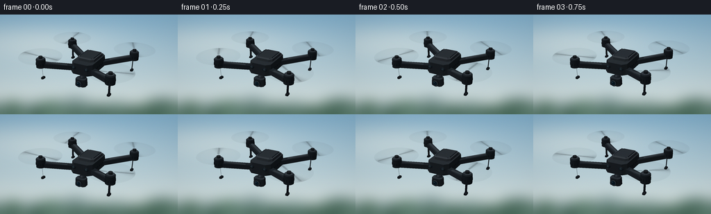
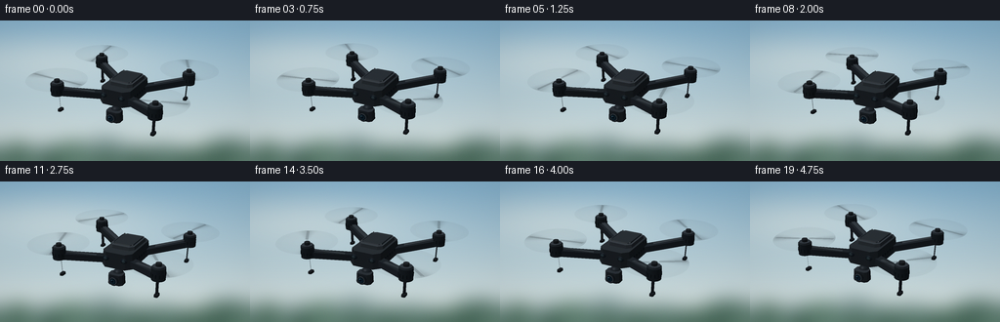

CODING AGENTS AS PIXEL WORLD MODELS
traex/GPT-6.1-Sol · instance_preservation_0041
点击播放 · 原生 RGB 像素
逐轮保存的候选
回放视频、检查图与代码变化。
每份候选均可单独播放。实际图片检查记录在下方工具轨迹中。
候选 01播放与检查图
点击播放 · 原生 RGB 像素


展开代码变化
--- 上一保存版本
+++ 本次保存版本
@@ -0,0 +1,210 @@
+from pathlib import Path
+import json, math
+import numpy as np
+from PIL import Image, ImageDraw, ImageFilter
+import artifact_io
+
+ROOT=Path(__file__).resolve().parent
+SPEC=json.loads((ROOT/'task_spec.json').read_text())
+W,H=SPEC['width'],SPEC['height']; SS=4; RW,RH=W*SS,H*SS
+rng=np.random.default_rng(81)
+
+# Painted distant landscape: deliberately out of focus behind the aircraft.
+def background():
+ yy,xx=np.mgrid[:RH,:RW].astype(float); v=yy/RH
+ top=np.array([124,169,197.]); bottom=np.array([223,230,224.])
+ im=top[None,None,:]*(1-v[:,:,None]) + bottom[None,None,:]*v[:,:,None]
+ cloud=np.exp(-((xx-RW*.22)/(RW*.50))**2-((yy-RH*.28)/(RH*.18))**2)*.45
+ im=im*(1-cloud[:,:,None])+np.array([244,243,232.])*cloud[:,:,None]
+ bg=Image.fromarray(np.uint8(im)); d=ImageDraw.Draw(bg)
+ # Very distant tree-covered ridge and closer soft tree bokeh at the foot of frame.
+ points=[(0,RH)]
+ for x in range(0,RW+10,10):
+ y=RH*(.87 + .025*math.sin(x/92)+.02*math.sin(x/39))
+ points.append((x,y))
+ points.append((RW,RH)); d.polygon(points, fill=(127,151,151))
+ for _ in range(90):
+ x=rng.uniform(-40,RW+40); y=rng.uniform(RH*.97,RH*1.2)
+ r=rng.uniform(20,70); c=tuple(int(v) for v in np.array([79,112,97])+rng.uniform(-16,18))
+ d.ellipse((x-r,y-r,x+r,y+r*1.5),fill=c)
+ return np.array(bg.filter(ImageFilter.GaussianBlur(9*SS)),dtype=float)
+BG=background()
+
+# Small self-contained triangle renderer. No external rendering engines.
+meshes=[]
+def tri(a,b,c,col,norms=None,alpha=1):
+ meshes.append((np.array([a,b,c],float),np.array(col,float),norms,alpha))
+def face(points,col):
+ for i in range(1,len(points)-1): tri(points[0],points[i],points[i+1],col)
+def box(center,size,col,bevel=.05):
+ # Beveled, faceted machinery casing.
+ cx,cy,cz=center; x,y,z=np.array(size)/2; b=min(bevel,x*.6,y*.6)
+ ring=[(-x+b,-y), (x-b,-y),(x,-y+b),(x,y-b),(x-b,y),(-x+b,y),(-x,y-b),(-x,-y+b)]
+ low=[(cx+a,cy+c,cz-z) for a,c in ring]
+ high=[(cx+a*.94,cy+c*.94,cz+z) for a,c in ring]
+ face(high,col); face(low[::-1],np.array(col)*.68)
+ for i in range(8):
+ j=(i+1)%8; face([low[i],low[j],high[j],high[i]],np.array(col)*(.75 if i%2==0 else .88))
+def cylinder(center,radius,height,col,N=24):
+ x,y,z=center; top=[]; bot=[]
+ for i in range(N):
+ a=i*2*np.pi/N; top.append((x+radius*np.cos(a),y+radius*np.sin(a),z+height/2)); bot.append((x+radius*np.cos(a),y+radius*np.sin(a),z-height/2))
+ face(top,col); face(bot[::-1],np.array(col)*.5)
+ for i in range(N):
+ j=(i+1)%N
+ norms=np.array([[np.cos(k*2*np.pi/N),np.sin(k*2*np.pi/N),0] for k in [i,j,j]])
+ tri(bot[i],bot[j],top[j],np.array(col)*.85,norms)
+ norms=np.array([[np.cos(k*2*np.pi/N),np.sin(k*2*np.pi/N),0] for k in [i,j,i]])
+ tri(bot[i],top[j],top[i],np.array(col)*.85,norms)
+def beam(a,b,width,height,col):
+ a=np.array(a);b=np.array(b); side=np.cross(b-a,[0,0,1]);side=side/np.linalg.norm(side)*width/2; up=np.array([0,0,height/2])
+ ps=[a-side-up,a+side-up,b+side-up,b-side-up,a-side+up,a+side+up,b+side+up,b-side+up]
+ for inds in [(4,5,6,7),(0,3,2,1),(0,1,5,4),(1,2,6,5),(2,3,7,6),(3,0,4,7)]: face([ps[i] for i in inds],col)
+def ellipsoid(center,scale,col,N=28,M=12):
+ center=np.array(center); scale=np.array(scale)
+ def point(i,j):
+ a=2*np.pi*i/N; b=np.pi*j/M
+ n=np.array([np.sin(b)*np.cos(a),np.sin(b)*np.sin(a),np.cos(b)])
+ p=center+scale*n; norm=n/scale; norm/=np.linalg.norm(norm)
+ return p,norm
+ for j in range(M):
+ for i in range(N):
+ p1,n1=point(i,j);p2,n2=point(i+1,j);p3,n3=point(i+1,j+1);p4,n4=point(i,j+1)
+ tri(p1,p2,p3,col,np.array([n1,n2,n3]));tri(p1,p3,p4,col,np.array([n1,n3,n4]))
+
+# Matte black quadcopter with four independent arms and brushless motor pods.
+motors=[]
+for x in [-1.22,1.22]:
+ for y in [-1.01,1.01]:
+ motors.append((x,y,.15))
+ beam((np.sign(x)*.30,np.sign(y)*.37,-.04),(x,y,.11),.20,.15,[24,27,30])
+ beam((np.sign(x)*.42,np.sign(y)*.49,.042),(x*.93,y*.93,.19),.095,.022,[41,45,48])
+ cylinder((x,y,.17),.155,.27,[23,27,30])
+ cylinder((x,y,.30),.13,.07,[40,44,48])
+ cylinder((x,y,.36),.065,.08,[26,28,30])
+ # Copper-dark stator vents around the motor collar.
+ for k in range(12):
+ a=2*np.pi*k/12
+ box((x+.151*np.cos(a),y+.151*np.sin(a),.15),(.021,.021,.085),[13,16,18],.002)
+ # A short landing foot beneath every arm.
+ beam((x*.98,y*.98,.01),(x*.97,y*.97,-.35),.07,.055,[20,23,26])
+ box((x*.97,y*.97,-.365),(.09,.16,.05),[20,22,24],.02)
+ led=[170,40,27] if y<0 else [36,147,97]
+ box((x,y-.131,.19),(.085,.018,.027),led,.002)
+
+box((0,0,.035),(.78,1.26,.36),[31,34,37],.14)
+box((0,.09,.24),(.64,.85,.105),[43,47,50],.10)
+box((0,.11,.301),(.52,.69,.018),[32,35,38],.06)
+# Top battery seams and tiny recessed screws.
+for x in [-.25,.25]:
+ beam((x,-.16,.313),(x,.38,.313),.012,.006,[14,17,20])
+ for y in [-.20,.41]: cylinder((x,y,.315),.016,.01,[66,69,71],10)
+# Side vents.
+for x in [-.377,.377]:
+ for y in np.linspace(-.36,.4,7): box((x,y,.005),(.012,.052,.061),[8,12,16],.004)
+# Front sensors.
+for x in [-.23,.23]:
+ ellipsoid((x,-.617,.075),(.087,.025,.062),[16,20,24],20,10)
+ ellipsoid((x,-.640,.075),(.042,.008,.036),[35,46,50],16,8)
+# Suspended three-axis camera beneath the front fuselage.
+beam((0,-.39,-.10),(0,-.41,-.34),.075,.08,[55,58,61])
+ellipsoid((0,-.44,-.34),(.13,.12,.115),[24,27,30])
+box((0,-.52,-.43),(.37,.28,.25),[33,36,39],.06)
+# Lens directed toward the camera, along minus y.
+def lens_ring(y,r,depth,col):
+ N=40; p=[]; q=[]
+ for i in range(N):
+ a=i*2*np.pi/N; p.append((r*np.cos(a),y,-.43+r*np.sin(a)));q.append((r*np.cos(a),y-depth,-.43+r*np.sin(a)))
+ face(q[::-1],col)
+ for i in range(N):
+ j=(i+1)%N; face([p[i],q[i],q[j],p[j]],np.array(col)*.75)
+lens_ring(-.67,.118,.036,[21,24,27]);lens_ring(-.710,.09,.009,[65,70,75]);lens_ring(-.720,.077,.004,[7,17,24]);lens_ring(-.726,.051,.002,[13,32,44]);lens_ring(-.729,.025,.001,[5,10,16])
+ellipsoid((-.024,-.733,-.400),(.013,.001,.009),[122,166,180],12,6)
+BASE=list(meshes)
+
+CAM=np.array([4.3,-8.3,4.15]); TARGET=np.array([0,0,-.02]); FWD=(TARGET-CAM);FWD/=np.linalg.norm(FWD)
+RIGHT=np.cross(FWD,[0,0,1.]);RIGHT/=np.linalg.norm(RIGHT);UP=np.cross(RIGHT,FWD)
+LIGHT=np.array([-3,-4,7.]);LIGHT/=np.linalg.norm(LIGHT)
+FOCAL=RW*1.72
+
+def rotation(t):
+ yaw=.028*np.sin(t*.8);roll=.013*np.sin(t*1.8);pitch=.010*np.cos(t*1.4)
+ ca,sa=np.cos(yaw),np.sin(yaw); cb,sb=np.cos(roll),np.sin(roll); cc,sc=np.cos(pitch),np.sin(pitch)
+ return np.array([[ca,-sa,0],[sa,ca,0],[0,0,1]])@np.array([[1,0,0],[0,cb,-sb],[0,sb,cb]])@np.array([[cc,0,sc],[0,1,0],[-sc,0,cc]])
+
+def render(t):
+ R=rotation(t); translate=np.array([.055*np.sin(t*.85),.018*np.sin(t),.045*np.sin(t*1.7)])
+ image=BG.copy(); zbuf=np.full((RH,RW),1e9)
+ def raster(item, transparent=False):
+ pts,col,norms,alpha=item
+ p=pts@R.T+translate; rel=p-CAM
+ dep=rel@FWD
+ sx=RW*.5+FOCAL*(rel@RIGHT)/dep;sy=RH*.50-FOCAL*(rel@UP)/dep
+ x0=max(0,int(np.floor(sx.min())));x1=min(RW-1,int(np.ceil(sx.max())))
+ y0=max(0,int(np.floor(sy.min())));y1=min(RH-1,int(np.ceil(sy.max())))
+ if x0>x1 or y0>y1:return
+ denom=(sy[1]-sy[2])*(sx[0]-sx[2])+(sx[2]-sx[1])*(sy[0]-sy[2])
+ if abs(denom)<1e-8:return
+ yy,xx=np.mgrid[y0:y1+1,x0:x1+1];xx=xx+.5;yy=yy+.5
+ a=((sy[1]-sy[2])*(xx-sx[2])+(sx[2]-sx[1])*(yy-sy[2]))/denom
+ b=((sy[2]-sy[0])*(xx-sx[2])+(sx[0]-sx[2])*(yy-sy[2]))/denom;c=1-a-b
+ z=1/(a/dep[0]+b/dep[1]+c/dep[2]);zb=zbuf[y0:y1+1,x0:x1+1]
+ mask=(a>=-1e-6)&(b>=-1e-6)&(c>=-1e-6)&(z<zb)
+ if not mask.any():return
+ if transparent:
+ rgb=col
+ else:
+ if norms is None:
+ n=np.cross(p[1]-p[0],p[2]-p[0]); n/=max(np.linalg.norm(n),1e-9)
+ if n@ (CAM-p.mean(0))<0:n=-n
+ diff=max(n@LIGHT,0); sky=max(n[2],0)
+ h=(LIGHT+(CAM-p.mean(0))/np.linalg.norm(CAM-p.mean(0)));h/=np.linalg.norm(h)
+ spec=max(n@h,0)**36
+ rgb=col*(.50+.60*diff+.22*sky)+spec*22+np.array([3,5,7])
+ else:
+ ns=np.array(norms)@R.T
+ n=a[:,:,None]*ns[0]+b[:,:,None]*ns[1]+c[:,:,None]*ns[2]
+ n/=np.maximum(np.linalg.norm(n,axis=2,keepdims=True),1e-9)
+ diff=np.maximum(n@LIGHT,0);sky=np.maximum(n[:,:,2],0)
+ h=LIGHT+(CAM-p.mean(0))/np.linalg.norm(CAM-p.mean(0));h/=np.linalg.norm(h)
+ spec=np.maximum(n@h,0)**38
+ rgb=col[None,None,:]*(.5+.6*diff[:,:,None]+.22*sky[:,:,None])+spec[:,:,None]*26+np.array([3,5,7])
+ patch=image[y0:y1+1,x0:x1+1]
+ if np.ndim(rgb)==1:patch[mask]=patch[mask]*(1-alpha)+np.clip(rgb,0,255)*alpha
+ else:patch[mask]=patch[mask]*(1-alpha)+np.clip(rgb[mask],0,255)*alpha
+ if not transparent:zb[mask]=z[mask]
+ for item in BASE:raster(item)
+ # Continuous propeller exposure blur, including ghosted opposing blades.
+ for k,(x,y,z) in enumerate(motors):
+ phase=t*(26 if k%2 else -29)+k*1.73
+ N=100;rad=.70
+ for ring in range(5):
+ r0=rad*ring/5;r1=rad*(ring+1)/5
+ for j in range(N):
+ a=j*2*np.pi/N;b=(j+1)*2*np.pi/N;mid=(a+b)/2
+ streak=max(0,np.cos(2*(mid-phase)))**8
+ alpha=(.036+.13*streak)*(0.45+0.55*(ring+1)/5)
+ a0=(x+r0*np.cos(a),y+r0*np.sin(a),.405);a1=(x+r1*np.cos(a),y+r1*np.sin(a),.405)
+ b0=(x+r0*np.cos(b),y+r0*np.sin(b),.405);b1=(x+r1*np.cos(b),y+r1*np.sin(b),.405)
+ raster((np.array([a0,a1,b1]),np.array([17,22,27]),None,alpha),True)
+ if ring:raster((np.array([a0,b1,b0]),np.array([17,22,27]),None,alpha),True)
+ # A more distinct broad streak gives the discs a blade-like reading.
+ for flip in [0,np.pi]:
+ ang=phase+flip
+ direction=np.array([np.cos(ang),np.sin(ang),0]);side=np.array([-np.sin(ang),np.cos(ang),0])
+ hub=np.array([x,y,.409]);ps=[hub+direction*.08-side*.025,hub+direction*.64-side*.055,hub+direction*.68+side*.011,hub+direction*.12+side*.04]
+ raster((np.array([ps[0],ps[1],ps[2]]),np.array([20,24,27]),None,.17),True)
+ raster((np.array([ps[0],ps[2],ps[3]]),np.array([20,24,27]),None,.17),True)
+ im=Image.fromarray(np.uint8(np.clip(image,0,255))).resize((W,H),Image.Resampling.LANCZOS)
+ arr=np.array(im,dtype=float)
+ # Restrained sensor grain and optical edge falloff.
+ yy,xx=np.mgrid[:H,:W];vign=1-.075*((xx-W*.5)**2/(W*.7)**2+(yy-H*.45)**2/(H*.9)**2)
+ arr*=vign[:,:,None];arr+=np.random.default_rng(200+int(t*4)).normal(0,.37,arr.shape)
+ return np.uint8(np.clip(arr,0,255))
+
+if __name__=='__main__':
+ frames=[]
+ for i in range(SPEC['frames']):
+ frames.append(render(i/SPEC['fps']))
+ print(f'Frame {i+1}/{SPEC["frames"]}',flush=True)
+ artifact_io.save(np.stack(frames),ROOT)
可观测工具轨迹
实际执行的命令与返回图片。
命令 1exit 0
/bin/bash -lc 'ls -la && cat prompt.txt && cat GENERATION_RULES.md && cat task_spec.json'
命令 2exit 0
/bin/bash -lc "cat artifact_io.py && python - <<'PY'
import PIL, numpy
print('ready')
PY"命令 3exit 0
/bin/bash -lc "cat > generate.py <<'PY'
from pathlib import Path
import json, math
import numpy as np
from PIL import Image, ImageDraw, ImageFilter
import artifact_io
ROOT=Path(__file__).resolve().parent
SPEC=json.loads((ROOT/'task_spec.json').read_text())
W,H=SPEC['width'],SPEC['height']; SS=4; RW,RH=W*SS,H*SS
rng=np.random.default_rng(81)
# Painted distant landscape: deliberately out of focus behind the aircraft.
def background():
yy,xx=np.mgrid[:RH,:RW].astype(float); v=yy/RH
top=np.array([124,169,197.]); bottom=np.array([223,230,224.])
im=top[None,None,:]*(1-v[:,:,None]) + bottom[None,None,:]*v[:,:,None]
cloud=np.exp(-((xx-RW*.22)/(RW*.50))**2-((yy-RH*.28)/(RH*.18))**2)*.45
im=im*(1-cloud[:,:,None])+np.array([244,243,232.])*cloud[:,:,None]
bg=Image.fromarray(np.uint8(im)); d=ImageDraw.Draw(bg)
# Very distant tree-covered ridge and closer soft tree bokeh at the foot of frame.
points=[(0,RH)]
for x in range(0,RW+10,10):
y=RH*(.87 + .025*math.sin(x/92)+.02*math.sin(x/39))
points.append((x,y))
points.append((RW,RH)); d.polygon(points, fill=(127,151,151))
for _ in range(90):
x=rng.uniform(-40,RW+40); y=rng.uniform(RH*.97,RH*1.2)
r=rng.uniform(20,70); c=tuple(int(v) for v in np.array([79,112,97])+rng.uniform(-16,18))
d.ellipse((x-r,y-r,x+r,y+r*1.5),fill=c)
return np.array(bg.filter(ImageFilter.GaussianBlur(9*SS)),dtype=float)
BG=background()
# Small self-contained triangle renderer. No external rendering engines.
meshes=[]
def tri(a,b,c,col,norms=None,alpha=1):
meshes.append((np.array([a,b,c],float),np.array(col,float),norms,alpha))
def face(points,col):
for i in range(1,len(points)-1): tri(points[0],points[i],points[i+1],col)
def box(center,size,col,bevel=.05):
# Beveled, faceted machinery casing.
cx,cy,cz=center; x,y,z=np.array(size)/2; b=min(bevel,x*.6,y*.6)
ring=[(-x+b,-y), (x-b,-y),(x,-y+b),(x,y-b),(x-b,y),(-x+b,y),(-x,y-b),(-x,-y+b)]
low=[(cx+a,cy+c,cz-z) for a,c in ring]
high=[(cx+a*.94,cy+c*.94,cz+z) for a,c in ring]
face(high,col); face(low[::-1],np.array(col)*.68)
for i in range(8):
j=(i+1)%8; face([low[i],low[j],high[j],high[i]],np.array(col)*(.75 if i%2==0 else .88))
def cylinder(center,radius,height,col,N=24):
x,y,z=center; top=[]; bot=[]
for i in range(N):
a=i*2*np.pi/N; top.append((x+radius*np.cos(a),y+radius*np.sin(a),z+height/2)); bot.append((x+radius*np.cos(a),y+radius*np.sin(a),z-height/2))
face(top,col); face(bot[::-1],np.array(col)*.5)
for i in range(N):
j=(i+1)%N
norms=np.array([[np.cos(k*2*np.pi/N),np.sin(k*2*np.pi/N),0] for k in [i,j,j]])
tri(bot[i],bot[j],top[j],np.array(col)*.85,norms)
norms=np.array([[np.cos(k*2*np.pi/N),np.sin(k*2*np.pi/N),0] for k in [i,j,i]])
tri(bot[i],top[j],top[i],np.array(col)*.85,norms)
def beam(a,b,width,height,col):
a=np.array(a);b=np.array(b); side=np.cross(b-a,[0,0,1]);side=side/np.linalg.norm(side)*width/2; up=np.array([0,0,height/2])
ps=[a-side-up,a+side-up,b+side-up,b-side-up,a-side+up,a+side+up,b+side+up,b-side+up]
for inds in [(4,5,6,7),(0,3,2,1),(0,1,5,4),(1,2,6,5),(2,3,7,6),(3,0,4,7)]: face([ps[i] for i in inds],col)
def ellipsoid(center,scale,col,N=28,M=12):
center=np.array(center); scale=np.array(scale)
def point(i,j):
a=2*np.pi*i/N; b=np.pi*j/M
n=np.array([np.sin(b)*np.cos(a),np.sin(b)*np.sin(a),np.cos(b)])
p=center+scale*n; norm=n/scale; norm/=np.linalg.norm(norm)
return p,norm
for j in range(M):
for i in range(N):
p1,n1=point(i,j);p2,n2=point(i+1,j);p3,n3=point(i+1,j+1);p4,n4=point(i,j+1)
tri(p1,p2,p3,col,np.array([n1,n2,n3]));tri(p1,p3,p4,col,np.array([n1,n3,n4]))
# Matte black quadcopter with four independent arms and brushless motor pods.
motors=[]
for x in [-1.22,1.22]:
for y in [-1.01,1.01]:
motors.append((x,y,.15))
beam((np.sign(x)*.30,np.sign(y)*.37,-.04),(x,y,.11),.20,.15,[24,27,30])
beam((np.sign(x)*.42,np.sign(y)*.49,.042),(x*.93,y*.93,.19),.095,.022,[41,45,48])
cylinder((x,y,.17),.155,.27,[23,27,30])
cylinder((x,y,.30),.13,.07,[40,44,48])
cylinder((x,y,.36),.065,.08,[26,28,30])
# Copper-dark stator vents around the motor collar.
for k in range(12):
a=2*np.pi*k/12
box((x+.151*np.cos(a),y+.151*np.sin(a),.15),(.021,.021,.085),[13,16,18],.002)
# A short landing foot beneath every arm.
beam((x*.98,y*.98,.01),(x*.97,y*.97,-.35),.07,.055,[20,23,26])
box((x*.97,y*.97,-.365),(.09,.16,.05),[20,22,24],.02)
led=[170,40,27] if y<0 else [36,147,97]
box((x,y-.131,.19),(.085,.018,.027),led,.002)
box((0,0,.035),(.78,1.26,.36),[31,34,37],.14)
box((0,.09,.24),(.64,.85,.105),[43,47,50],.10)
box((0,.11,.301),(.52,.69,.018),[32,35,38],.06)
# Top battery seams and tiny recessed screws.
for x in [-.25,.25]:
beam((x,-.16,.313),(x,.38,.313),.012,.006,[14,17,20])
for y in [-.20,.41]: cylinder((x,y,.315),.016,.01,[66,69,71],10)
# Side vents.
for x in [-.377,.377]:
for y in np.linspace(-.36,.4,7): box((x,y,.005),(.012,.052,.061),[8,12,16],.004)
# Front sensors.
for x in [-.23,.23]:
ellipsoid((x,-.617,.075),(.087,.025,.062),[16,20,24],20,10)
ellipsoid((x,-.640,.075),(.042,.008,.036),[35,46,50],16,8)
# Suspended three-axis camera beneath the front fuselage.
beam((0,-.39,-.10),(0,-.41,-.34),.075,.08,[55,58,61])
ellipsoid((0,-.44,-.34),(.13,.12,.115),[24,27,30])
box((0,-.52,-.43),(.37,.28,.25),[33,36,39],.06)
# Lens directed toward the camera, along minus y.
def lens_ring(y,r,depth,col):
N=40; p=[]; q=[]
for i in range(N):
a=i*2*np.pi/N; p.append((r*np.cos(a),y,-.43+r*np.sin(a)));q.append((r*np.cos(a),y-depth,-.43+r*np.sin(a)))
face(q[::-1],col)
for i in range(N):
j=(i+1)%N; face([p[i],q[i],q[j],p[j]],np.array(col)*.75)
lens_ring(-.67,.118,.036,[21,24,27]);lens_ring(-.710,.09,.009,[65,70,75]);lens_ring(-.720,.077,.004,[7,17,24]);lens_ring(-.726,.051,.002,[13,32,44]);lens_ring(-.729,.025,.001,[5,10,16])
ellipsoid((-.024,-.733,-.400),(.013,.001,.009),[122,166,180],12,6)
BASE=list(meshes)
CAM=np.array([4.3,-8.3,4.15]); TARGET=np.array([0,0,-.02]); FWD=(TARGET-CAM);FWD/=np.linalg.norm(FWD)
RIGHT=np.cross(FWD,[0,0,1.]);RIGHT/=np.linalg.norm(RIGHT);UP=np.cross(RIGHT,FWD)
LIGHT=np.array([-3,-4,7.]);LIGHT/=np.linalg.norm(LIGHT)
FOCAL=RW*1.72
def rotation(t):
yaw=.028*np.sin(t*.8);roll=.013*np.sin(t*1.8);pitch=.010*np.cos(t*1.4)
ca,sa=np.cos(yaw),np.sin(yaw); cb,sb=np.cos(roll),np.sin(roll); cc,sc=np.cos(pitch),np.sin(pitch)
return np.array([[ca,-sa,0],[sa,ca,0],[0,0,1]])@np.array([[1,0,0],[0,cb,-sb],[0,sb,cb]])@np.array([[cc,0,sc],[0,1,0],[-sc,0,cc]])
def render(t):
R=rotation(t); translate=np.array([.055*np.sin(t*.85),.018*np.sin(t),.045*np.sin(t*1.7)])
image=BG.copy(); zbuf=np.full((RH,RW),1e9)
def raster(item, transparent=False):
pts,col,norms,alpha=item
p=pts@R.T+translate; rel=p-CAM
dep=rel@FWD
sx=RW*.5+FOCAL*(rel@RIGHT)/dep;sy=RH*.50-FOCAL*(rel@UP)/dep
x0=max(0,int(np.floor(sx.min())));x1=min(RW-1,int(np.ceil(sx.max())))
y0=max(0,int(np.floor(sy.min())));y1=min(RH-1,int(np.ceil(sy.max())))
if x0>x1 or y0>y1:return
denom=(sy[1]-sy[2])*(sx[0]-sx[2])+(sx[2]-sx[1])*(sy[0]-sy[2])
if abs(denom)<1e-8:return
yy,xx=np.mgrid[y0:y1+1,x0:x1+1];xx=xx+.5;yy=yy+.5
a=((sy[1]-sy[2])*(xx-sx[2])+(sx[2]-sx[1])*(yy-sy[2]))/denom
b=((sy[2]-sy[0])*(xx-sx[2])+(sx[0]-sx[2])*(yy-sy[2]))/denom;c=1-a-b
z=1/(a/dep[0]+b/dep[1]+c/dep[2]);zb=zbuf[y0:y1+1,x0:x1+1]
mask=(a>=-1e-6)&(b>=-1e-6)&(c>=-1e-6)&(z<zb)
if not mask.any():return
if transparent:
rgb=col
else:
if norms is None:
n=np.cross(p[1]-p[0],p[2]-p[0]); n/=max(np.linalg.norm(n),1e-9)
if n@ (CAM-p.mean(0))<0:n=-n
diff=max(n@LIGHT,0); sky=max(n[2],0)
h=(LIGHT+(CAM-p.mean(0))/np.linalg.norm(CAM-p.mean(0)));h/=np.linalg.norm(h)
spec=max(n@h,0)**36
rgb=col*(.50+.60*diff+.22*sky)+spec*22+np.array([3,5,7])
else:
ns=np.array(norms)@R.T
n=a[:,:,None]*ns[0]+b[:,:,None]*ns[1]+c[:,:,None]*ns[2]
n/=np.maximum(np.linalg.norm(n,axis=2,keepdims=True),1e-9)
diff=np.maximum(n@LIGHT,0);sky=np.maximum(n[:,:,2],0)
h=LIGHT+(CAM-p.mean(0))/np.linalg.norm(CAM-p.mean(0));h/=np.linalg.norm(h)
spec=np.maximum(n@h,0)**38
rgb=col[None,None,:]*(.5+.6*diff[:,:,None]+.22*sky[:,:,None])+spec[:,:,None]*26+np.array([3,5,7])
patch=image[y0:y1+1,x0:x1+1]
if np.ndim(rgb)==1:patch[mask]=patch[mask]*(1-alpha)+np.clip(rgb,0,255)*alpha
else:patch[mask]=patch[mask]*(1-alpha)+np.clip(rgb[mask],0,255)*alpha
if not transparent:zb[mask]=z[mask]
for item in BASE:raster(item)
# Continuous propeller exposure blur, including ghosted opposing blades.
for k,(x,y,z) in enumerate(motors):
phase=t*(26 if k%2 else -29)+k*1.73
N=100;rad=.70
for ring in range(5):
r0=rad*ring/5;r1=rad*(ring+1)/5
for j in range(N):
a=j*2*np.pi/N;b=(j+1)*2*np.pi/N;mid=(a+b)/2
streak=max(0,np.cos(2*(mid-phase)))**8
alpha=(.036+.13*streak)*(0.45+0.55*(ring+1)/5)
a0=(x+r0*np.cos(a),y+r0*np.sin(a),.405);a1=(x+r1*np.cos(a),y+r1*np.sin(a),.405)
b0=(x+r0*np.cos(b),y+r0*np.sin(b),.405);b1=(x+r1*np.cos(b),y+r1*np.sin(b),.405)
raster((np.array([a0,a1,b1]),np.array([17,22,27]),None,alpha),True)
if ring:raster((np.array([a0,b1,b0]),np.array([17,22,27]),None,alpha),True)
# A more distinct broad streak gives the discs a blade-like reading.
for flip in [0,np.pi]:
ang=phase+flip
direction=np.array([np.cos(ang),np.sin(ang),0]);side=np.array([-np.sin(ang),np.cos(ang),0])
hub=np.array([x,y,.409]);ps=[hub+direction*.08-side*.025,hub+direction*.64-side*.055,hub+direction*.68+side*.011,hub+direction*.12+side*.04]
raster((np.array([ps[0],ps[1],ps[2]]),np.array([20,24,27]),None,.17),True)
raster((np.array([ps[0],ps[2],ps[3]]),np.array([20,24,27]),None,.17),True)
im=Image.fromarray(np.uint8(np.clip(image,0,255))).resize((W,H),Image.Resampling.LANCZOS)
arr=np.array(im,dtype=float)
# Restrained sensor grain and optical edge falloff.
yy,xx=np.mgrid[:H,:W];vign=1-.075*((xx-W*.5)**2/(W*.7)**2+(yy-H*.45)**2/(H*.9)**2)
arr*=vign[:,:,None];arr+=np.random.default_rng(200+int(t*4)).normal(0,.37,arr.shape)
return np.uint8(np.clip(arr,0,255))
if __name__=='__main__':
frames=[]
for i in range(SPEC['frames']):
frames.append(render(i/SPEC['fps']))
print(f'Frame {i+1}/{SPEC[\"frames\"]}',flush=True)
artifact_io.save(np.stack(frames),ROOT)
PY
python generate.py"命令 4exit 0
/bin/bash -lc "python - <<'PY'
import numpy as np
from pathlib import Path
from PIL import Image
p=Path('.')
a=np.load(p/'pixels.npz')['pixels']
assert a.shape==(144,256,20)
assert len(list((p/'frames').glob('*.png')))==20
assert all(Image.open(f).mode=='RGB' for f in (p/'frames').glob('*.png'))
assert (p/'index.html').is_file()
print('Verified: 20 RGB frames, 256Ã144, 4 fps; required artifacts present.')
PY"视觉工具实际返回图片 1

保存候选 1 份；完成命令 4 次；可验证图片返回 1 张。原始 API 响应与完整日志保留在本地。